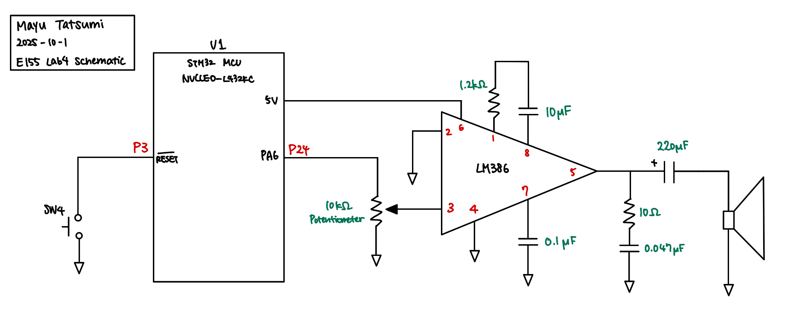

Lab 4: Digital Audio
Introduction
In this lab, we utilized the STM32L432KC MCU and a speaker to play a set of predetermined notes. This was done by creating our own drivers from scratch, making sure we configure and instantiate the utilizing two onboard timers. Both had the same system clock input of 80MHz, but each was configured so that they would count up to various values. One timer generated a square wave that output to a GPIO pin, therefore creating sounds out of the frequency, and the other created delays that changed the length of each note. There was some circuitry involved, where we hooked up an LM386 audio power amplifier to a speaker, which was controlled by both the MCU and a potentiometer.
LINK: E155 Lab 4 Instructions
Design and Testing Methodology
Timer setup and initialization was done by a provided driver, where the multiple speed internal (MSI) clock, driven by an RC oscillator, input the onboard phase-locked loop (PLL). The maximum value of 80 MHz was chosen to drive both TIM15 and TIM16, some general-purpose timers. TIM16 generated a PWM to a GPIO, specifically pin A6, and TIM15 ensured the delay in between each change in note was accurate.
Prescalar calculations were conducted via this Google Spreadsheet, where I found a combination of PSC and ARR values that correctly fit each timer’s needs. TIM15, as the delay clock, needed a maximum frequency of 1Hz and a minimum frequency of 500 Hz to be able to hold out for the longest duration. TIM16 had to drive a minimum of 220 Hz and a maximum of 1000 Hz to produce the correct frequencies of sound, as given by the spec sheet. PSC by design needs to stay constant for a timer no matter what. To make sure that ARR stayed within its register of up to 16 bits, some tweaking was involved. By following the equations \(f_{CNT} = \frac{SYSCLK}{PSC + 1}\) and \(f = \frac{f_{CNT}}{ARR + 1}\), it was possible to create a larger PSC of 4000 for TIM15 and a small PSC value of 20 for TIM16, which both suited ARR values to stay within the range.
Technical Documentation
The source code for the project can be found in this GitHub repository.
Schematic

Figure 2 depicts the physical schematic of the design. The design and components for the LM386 circuit was given by an example from its datasheet, specifically its Gain 50 circuit at Section 9.2.3.
Results and Discussion
Oscilloscope
Attached are three oscilloscope traces displaying correct frequency behavior. Figure 3 is the trace shown when a note of C5 is being played as a part of Fur Elise. Figure 4 and 5 demonstrate the circuit’s propensity to generate at its minimum and maximum specified frequencies, at 220 Hz and 100 0Hz respectively.
Conclusion
The design made in this lab successfully operated a speaker, creating sounds that were discernable to the ear. The Fur Elise song and the score for Superman were used. Driver files were created from scratch, where timers were instantiated to take in a system clock input, and loaded different counter values to generate a square wave and durations at various frequencies. Circuitry involving the LM386 audio amplifier and potentiometer were physically created as well. Total hours worked: 12 hours.
AI Prototype Summary
Abriged Chat Log
First Prompt: What timers should I use on the STM32L432KC to generate frequencies ranging from 220Hz to 1kHz? What’s the best choice of timer if I want to easily connect it to a GPIO pin? What formulae are relevant, and what registers need to be set to configure them properly?
Great question — let’s walk through this systematically for the STM32L432KC (Cortex-M4, L4 series)…
Summary: - Use TIM2 (32-bit, general-purpose, easy GPIO output on PA0/PA5/PA15). - \(f_{OUT} = \frac{f_{TIM}}{(PSC+1)(ARR+1)}\) - Registers: PSC, ARR, CCRn, CCMRx, CCER, CR1. - Choose PSC=79 → gives 1 MHz timer tick → then ARR = 999–4544 gives 1 kHz–220 Hz.
Second Prompt: Using this reference manual of the MCU as context, what timers should I use on the STM32L432KC to generate frequencies ranging from 220Hz to 1kHz? What’s the best choice of timer if I want to easily connect it to a GPIO pin? What formulae are relevant, and what registers need to be set to configure them properly?
I dug into the STM32L432KC reference manual you provided. Here’s how it breaks down for generating frequencies in the 220 Hz – 1 kHz range: …
Summary: - Use TIM2 (best for simple frequency generation to a GPIO). - Formula: \(f_{OUT} = \frac{f_{TIM}}{(PSC+1)(ARR+1)}\) - Configure PSC, ARR, CCRy, CCMRx, CCER, CR1. - Map timer channel to a GPIO AF in GPIOx_MODER + GPIOx_AFR.
Reflection
I used ChatGPT’s GPT-4 model for this prototype. Both prompts recommended TIM1 and TIM2 for advanced-control PWM generation. Both made sure to enable the GPIO pins at alternate function. The one prompted with the reference manual declined to mention the BDTR flag. Neither reset the CNT register, which may or may not be necessary for implementation. However, overall, the setup for initialization seems fine and similar to what I had. It isn’t able to determine exactly which bit in the register or what values to change them to, but it is able to explain it clearly enough so that if you go into the datasheet, it is easy enough to find and code it.
The PSC values were accurate enough, since the LLM was able to correctly deduce that a 80MHz clock was input for the timers. Neither had the same ARR values, however. I think the model easily had accurate results even without the reference manual as the information for STM32L432KC is widely available online. I would rate these responses both a 9/10, since I think they are both probably really useful to know and can easily help implement. There’s still a need to look at the datasheet, which is probably better honestly since it forces users to understand exactly what they are doing.